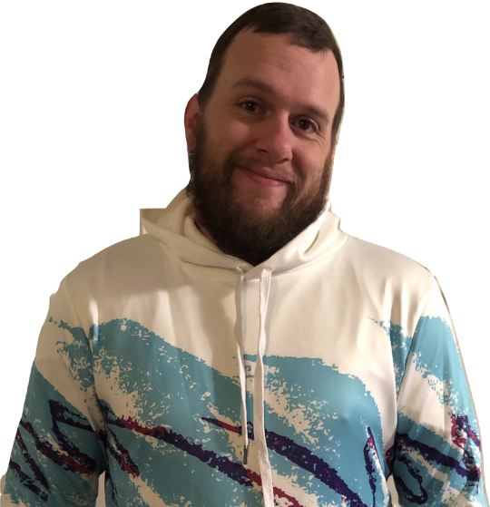

Skills
HTML570%
CSS3
70%
Java
45%
JavaScript
15%
SQL
15%
Certified



I am currently a student studying Computer Science at Western Governor's University with a planned graduation date November 2019. I have decades of experience in the wireless industry working for tech giants like Verizon Wireless and currently Apple on the consumer sides of their businesses. I have years of experience successfully managing team's of diverse people to produce top-level results.
I've always loved computers, technology and am a Linux enthusiast. I decided just before turning 40 to learn software development to create. My Object Oriented Focus is in the Java language and have additional development certifications outlined in the Skills summary. I will be building out this webpage as I learn new skills and put them to use eventually with a full functioning blog to share my story as I continue down this path of "becoming a software developer"
I've always loved computers, technology and am a Linux enthusiast. I decided just before turning 40 to learn software development to create. My Object Oriented Focus is in the Java language and have additional development certifications outlined in the Skills summary. I will be building out this webpage as I learn new skills and put them to use eventually with a full functioning blog to share my story as I continue down this path of "becoming a software developer"